Previous slide Next slide Toggle fullscreen Toggle overview view Open presenter view
Своя ML-модель автодополнения внутри плагина IntelliJ
Go (idea-golang-support), C# (idea-dotnet-support) и общий движок idea-ml-completion
Три слоя: n-граммная LM → listwise-ранкер списка → собственный трансформер для подсказки целой строки.
Все числа — из CHANGELOG.md (e01–e18), docs/*.md и eval-файлов репозитория; источник указан в заметках к каждому слайду.
О чём доклад
Задача и ограничения
Данные: корпуса, фильтры, два токенизатора
Слой 1 — n-граммная LM (32 MB, 5-граммы)
Слой 2 — ранкер списка автодополнения на реальных списках плагина
Слой 3 — собственный трансформер 31 M / 50 M с fill-in-the-middle
Как мы это измеряем: harness, пороги, token healing, учителя, fresh-наборы
Инференс в IDE: int8-формат, Kotlin и нативные ядра, KV-кэш, политика показа
Инструменты и дисциплина экспериментов
Что дальше
Задача: две вещи, которые должен делать плагин
Серая подсказка целой строки
_, err :=⟨курсор⟩
→ ic.getAerospikeVersion(node)
Показать только когда уверены; остальное время — молчать.
Ранжирование списка автодополнения
Список строит плагин по PSI — все кандидаты корректны по типам.
Go, реальные списки: правила плагина top-1 0.388 , ранкер 0.710 ; C#: 0.367 → 0.588.
Третий сценарий, бонус: текст внутри строковых литералов (сообщения логов, format-строки, struct-теги).
Ограничения, которые определили конструкцию
Ограничение
Следствие
Никаких сторонних предобученных моделей (Qwen, llama-family…)
модель обучается с нуля на своём корпусе
Никаких нативных рантаймов (llama.cpp, ONNX) в плагине
инференс — свой Kotlin в ml-core; опционально свои ~100 KB C-ядер
От пользователя ничего не требовать (нет правок vmoptions)
JBR не содержит jdk.incubator.vector — production-путь скалярный Kotlin
Без preview-API в ml-core (FFM в JBR 21 — preview)
веса в off-heap ByteBuffer, mmap
Ничего не покидает машину
нет сети в рантайме; корпус и модели — только на сервере и в GitHub
Проверено: --add-modules=jdk.incubator.vector в vmoptions ломает запуск IDE (JBR 25.0.3).
Почему не «как у JetBrains»
Full Line Code Completion в GoLand/Rider — нативный llama.cpp, поставляемый вместе с IDE, флаги JVM в product-level vmoptions.
Плагину это недоступно: он живёт внутри чужой JVM и не может менять её опции.
Отсюда: модель должна быть маленькой (31–50 M параметров, int8 файл 31–50 MB), а инференс — на CPU, в бюджете
Корпус: все репозитории GitHub ≥ 20★, не форки, > 300 KB
Go
C#
Каталог (tools/corpus/enumerate.py)
38 085 строк, 34 215 неархивных
42 579 строк, 38 156 неархивных
Скачано (source-only снимки HEAD: *.go/*.cs + LICENSE/README)
34 229, ~190 GB
38 150, 113 GB
Скорость загрузки (codeload-tarballs, 32 потока)
~170 MB/s, весь каталог ~25 мин
После prepare (фильтры + dedup)
4.69 млн файлов, 32.7 GB, 5.81 G лексерных токенов
6.06 млн, 34.5 GB, 4.22 G
Фолды lm / rank / test (репозиториев)
22 620 / 11 309 / 300
25 234 / 12 616 / 300
Фолды детерминированы по md5 имени репозитория: первые 300 → test, каждый третий из остальных → rank, прочие → lm.никогда не делят репозиторий (cross-fitting, см. e07).
Лицензии: MIT и Apache доминируют, у четверти C# лицензии нет
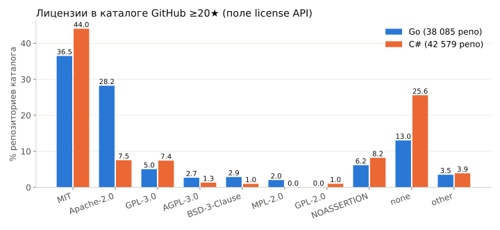
ml-train prepare: что отбрасывается
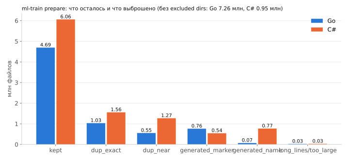
Исключённые каталоги (vendor, testdata, third_party, PackageCache…) не читаются вовсе: Go — 7.26 млн файлов / 101 GB.
Дубликаты: точные по хэшу токенов + близкие MinHash/LSH по множеству идентификаторов (Jaccard ≥ 0.8). Go 25 %, C# 32 % кандидатов.
Генерированный код: маркер Code generated … DO NOT EDIT / <auto-generated в строке комментария , имена *.designer.cs, EF-миграции, Verify-снапшоты.
Аудит lm-фолдов нашёл реальные утечки : облачные ключи, JWT, пароли в DSN, приватные ключи — в основном в тестовых фикстурах.
Политика: файл с секретом выбрасывается (0.39 % байт Go / 0.16 % C#), значения заменяются (0.013 % / 0.017 %).
Первая Go-модель go31m-e1 обучалась до фильтра — не опубликована; все модели с e18 — на очищенных шардах.
Строки и комментарии при этом в корпусе остаются: подсказка внутри литерала — отдельный сценарий.
Два токенизатора под два слоя
Лексер (n-граммы, ранкер)
Свои лексеры Go и C# в ml-core/lex.
Строки → <STR>, числа → <NUM>, комментарии невидимы.
Словарь идентификаторов с капом 50 k, редкие → <ID> (~21 % идентификаторов в Go OOV).
Шарды: id << 2 | atLineEnd << 1 | lineStart — 4 байта/токен, 23 GB на 5.8 G токенов.
Byte-level BPE 16 384 (нейромодель)
Свой тренер (Python) и энкодер (Kotlin), без сторонних библиотек.
Претокенизатор go-code-1: \n + отступ — один претокен; буквы/цифры/пунктуация не склеиваются (int32 → int 3 2); camelCase не режется.
id 0–255 — байты, последние 16 — спец-токены (<|fim_prefix|>, <|file_sep|>…).
Go: 3.16 байт/токен; 32k сэкономил бы лишь 3.8 % токенов за ×2 embedding.
Паритет BPE Kotlin ↔ Python — обязательное условие
10 571 кейс: 571 синтетический (пустой ввод, CRLF, NUL, невалидный UTF-8, эмодзи/ZWJ, BOM, строки 5 000 символов, литеральный <|endoftext|>) + 10 000 файлов test-фолда.
21.66 млн id совпали, round-trip побайтно точный.
Kotlin-энкодер ~84 MB/s в один поток.
Большая фикстура (31 MB) вне репо (CML_BPE_FIXTURE), маленькая (0.28 MB) — в ml-core/src/test/resources/bpe.
Словарь C# обучен отдельно: Go-словарь на C# даёт 3.92 байта/токен (+7 % токенов).
3. Слой 1 — n-граммная LM
Модифицированный Kneser–Ney, порядок 5, на полном корпусе
PartitionedNgramTrainer: словарь делится на 64 бина по первому токену; один проход шардов на бин собирает таблицы, считает continuation-counts, прунит SRILM-стилем, спиллит выживших.Go: 3.9 G токенов, 24 потока, ~85 GB heap, 11–12 минут ; 223 M различных 5-грамм, 105 M 4-грамм, 34 M 3-грамм.
Пороги --min-count 1,2,5,8,8 --min-repos 1,1,10,40,60: n-грамма из одного репозитория — шум на чужом коде.
Pruning исправлен в e03: оценка из полных счётчиков, backoff-вес пересчитывается так, что распределение по-прежнему суммируется в 1 (есть тест).
Go e14
n-грамм
размер
ppl
top-1
e14-a, пороги e12
33.1 M
207 MB
3.8
0.525
e14-b 5.5 M
32 MB 4.1
0.521
e14-d
4.4 M
23 MB
4.3
0.520
Компактное хранение: 45 → 19 MB без потерь (e02)
CompactFloatMap: open addressing по 64-битному хэшу n-граммы, в слоте — 24-битный fingerprint (индекс слота фиксирует остальные биты) + 8-битный индекс в 256 квантильных бинов.На диске: дельта слота (varint) + 3 + 1 байта на запись. Коллизии ≈ 1e-7 на lookup.
Go: 45.1 → 18.6 MB, ppl 8.3 → 8.3, top-1 0.335 → 0.333, MRR ранкера 0.715 → 0.715.
Точная LongFloatMap остаётся для обучения; NgramModel.write конвертирует.
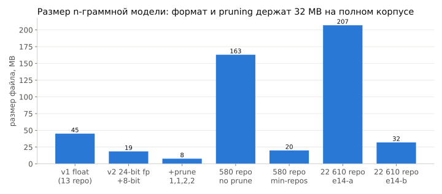
Кэш файла λ=0.3 — самый большой выигрыш в n-граммном слое (e04)
CacheLm (порядок 3, absolute discounting по уже увиденным токенам файла) + MixedLm: P = λ·P_cache + (1−λ)·P_global.«Localness of software» (Tu, Su & Devanbu 2014); в IDE кэш кормится из буфера редактора, ~1 µs на токен.
Go (13 репо, файловый сплит)
без кэша
λ=0.3
λ=0.5
perplexity
8.3
5.0 4.9
top-1 / top-5 идентификатора
0.333 / 0.522
0.471 / 0.707 0.490 / 0.717
MRR ранкера
0.715
0.773 0.768
λ=0.5 лучше для «сырой» LM, λ=0.3 — для ранкера; стандарт измерений — 0.3.
Честные числа: сплит по репозиториям, не по файлам (e05)
Файловый сплит был оптимистичен: при held-out репозиториях OOV идентификаторов утраивается (Go 8.9 → 29.4 %, C# 18.4 → 26.5 %), MRR ранкера −0.06.
LM-only baseline падает сильнее (0.72 → 0.55), чем ранкер (0.77 → 0.71): признаки «внутри файла» переносятся на новые репо, глобальная LM — нет.
e07: LM, обученная на тех же репо, что и ранкер, портила ранкер (0.712 → 0.683) — lm_global_logprob завышен на знакомых файлах. Лечение — cross-fitting (LM на 2/3 репо, ранкер на 1/3).
С e05 стандарт измерения: сплит по репозиториям, dedup 0.8, cache λ=0.3, 300 held-out репо на полных корпусах.
Perplexity n-грамм по экспериментам
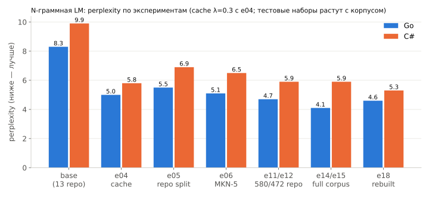
MKN против Jelinek–Mercer, порядок 4 против 5 (e06)
Go, repo split, cache 0.3
размер
ppl
top-1 / top-5
MRR
MKN order 4
30 MB
5.5
0.440 / 0.682
0.712
JM order 4, λ=0.5
29 MB
6.1
0.450 / 0.685
0.710
JM order 5
59 MB
5.5
0.446 / 0.688
0.713
MKN order 5 61 MB
5.1 0.448 / 0.689
0.716
Литературный результат «JM-6 бьёт KN-3 на Java» на наших данных не воспроизвёлся: правильно оценённый MKN лучше на 0.5–0.6 ppl.
Порядок 5 на 19 репо не стоил своих 2× размера; на 580 (e12) — уже стоил (ppl 5.1 → 4.7, +1.6 п.п. top-1, +7 MB).
Что n-граммы умеют как inline-подсказка (e13/e14)
Go, e14-b, показ при conf ≥
показано
≥ 3 токена верно
точность токенов
0.7
16.5 %
83.3 %
—
0.8 10.0 % 92.9 % 0.956
Остаток строки (≤ 8 токенов) целиком: 35.1 %; первый токен 0.652. C# e15-a: 3.1 % при 87.9 %, остаток 31.5 %.
Что получается: идиомы err != nil { return err }, закрывающие скобки, { get; set; }, [Fact] public void X() {.
Что нет: начало оператора (не n-граммный вопрос), арность — Color.FromArgb(r, g, b → , <NUM>: 5-грамма не знает, сколько аргументов.
~1 мс на шаг (argmax по 50 k словарю).
Сегодня n-грамма — признак lm_logprob ранкера и запасной inline-режим; целую строку собирает трансформер.
4. Слой 2 — ранкер списка автодополнения
Что такое список и чем его ранжировать
Список строит плагин: Go — GoCompletionContributor, C# — NativeCSharpCompletion / NativeCSharpMemberCompletion. В среднем 48 кандидатов , до 100 в выборке.
Ранкер — линейный, listwise: score = w · x, обучение минимизирует −log softmax(w·x)[chosen] по списку, L2 1e-4, 10 эпох (LinearRanker.kt).
Схема признаков (FeatureSchema.kt): 13 общих + языковой блок (Go 17, C# 19), каждый блок конъюнкция с видом контекста (6 видов: после ., начало оператора, аргумент, позиция типа, правая часть =, прочее) → Go 30 × 7 = 210 весов .
Хэш схемы хранится в модели: модель одной схемы отказывается оценивать векторы другой (training/serving parity).
Бюджет в IDE: < 5 мс на 500 кандидатов — O(кандидаты × порядок) hash-lookup'ов.
13 общих признаков — из текста и статистики, без PSI
признак
смысл
lm_logprobn-грамма log P(кандидат | контекст) с кэшем файла
lm_global_logprobто же без кэша — модель сама взвешивает «локальное vs глобальное»
file_freq_log, recency_log, is_most_recentсколько раз и как давно встречался в файле
prefix_case_match, upper_initial, name_len, in_vocabформа имени и набранный префикс
list_size_log, lm_rank_log, lm_delta_best, freq_rank_logотносительные по списку (после скоринга всех кандидатов)
Языковой блок Go (адаптер): группы вида (kind_local/param/field/method/func/type/package/keyword), уровень области видимости, needs_import,rule_rank_log.
Правило адаптера: генератор примеров (офлайн, headless) и weigher в IDE считают признаки одним и тем же кодом ; паритетный тест обязателен.
Proxy-списки против реальных: почему синтетика не переносится
До e10 ранкер учился на proxy-списках : кандидаты сэмплированы из словаря вокруг истинного токена.
На proxy-тесте всё хорошо (Go MRR 0.759, C# 0.756). На реальных списках плагина proxy-ранкер даёт 0.518 — хуже правил плагина (0.527) .
Причина: у proxy-списка нет PSI-структуры (виды, scope, ожидаемый тип); ранкер не видел ни одного настоящего распределения кандидатов.
Вывод e17: ранкер плагина обучается только на реальных списках. C#-ранкер e15 (proxy) — отладочный, переобучается в e18.
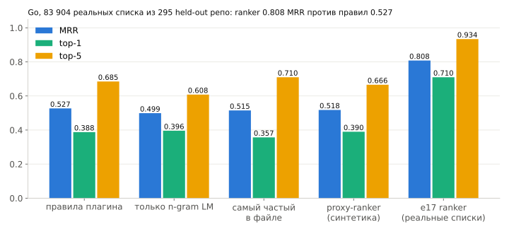
Как достать реальные списки: headless IDE на сервере
IntelliJ IDEA Community 2026.1.4 распакована в /root/work/idea, JBR как JAVA_HOME, Go 1.27.1, fontconfig (headless-редактор всё равно просит шрифт).
Export — JUnit-класс плагина GoMlDatasetExport (./gradlew :go-psi-ide:mlDataset); ≤ 120 файлов на репо, 10 позиций на файл, префикс 0–2 символа, ≤ 100 кандидатов, ответ = токен из исходника.
Однопоточный → 10 JVM с командной строкой Gradle test worker'а и раздельными sandbox-каталогами: 595 репозиториев за ~26 мин, 27 мс на позицию.
Плагин показывает список в 65–66 % позиций (29 % — имена объявлений и т. п.), ответ есть в списке в 88.6–88.9 % (recall плагина).
фолд
репо
файлов
позиций
списков
кандидатов/список
rank
300
20 970
204 497
119 723
48.1
test
295
14 794
144 507
83 904
46.3
Находка: в корпусе не было go.mod
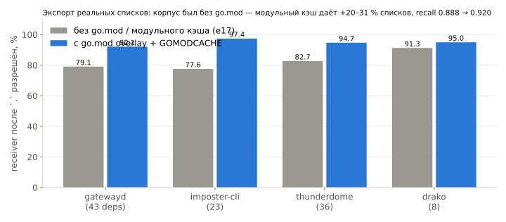
fetch.sh хранил только *.go + LICENSE/README → в e17 каждый внешний импорт был неразрешён .Лечение: go.mod/go.sum докачиваются в overlay (prepare-mods.sh), зависимости — в GOMODCACHE вне IDE.
Индексы GOROOT/модулей ничего не дают (completion берёт типы из PSI, не из stub-индекса); цена — +15–20 % на позицию.
По видам контекста и по весам
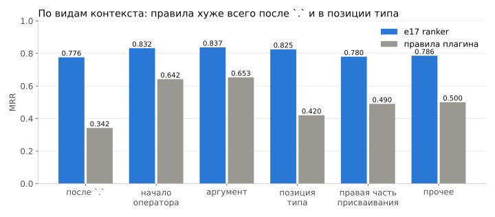
Самые тяжёлые веса — то, что правила тоже «знают», но не умеют взвесить
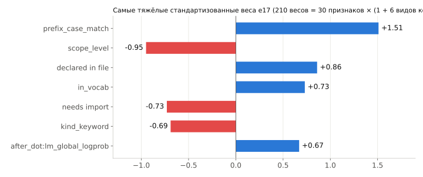
Обучение: 55 с на 119 723 списках; e10 (7 репо) → e17 (300 репо): MRR 0.783 → 0.808 на тесте в 10× больше.
C#: ранкер на реальных списках (e18)
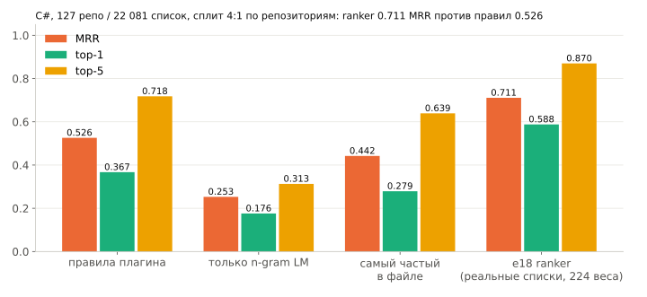
Плагин .NET: CSharpMlFeatures (19 языковых признаков + 13 общих), Gradle-задача mlDataset; 16 worker'ов в git-worktree, ~6 ч → 127 репозиториев, 22 081 список , 57 кандидатов на список.
По контекстам (MRR): после . 0.647, начало оператора 0.657, аргумент 0.736, тип 0.723, правая часть = 0.779. Тяжёлые веса — та же картина, что в Go: prefix exact-case +1.31, needs_using −0.87, keyword в начале оператора −0.85.
Go e17b (переэкспорт с зависимостями, 150 + 100 репо, 60 мин): MRR 0.799 / top-1 0.700 против правил 0.513 / 0.380 — результат e17 воспроизведён на половине репозиториев; go-rank-e17b.cml — модель для поставки.
5. Слой 3 — собственный трансформер
Архитектура: Llama-стиль, минимум операций для Kotlin
x = tok_emb[ids] # tied: lm_head = tok_emb^T
for each of L layers:
x += Wo · Attn( RoPE(Wq·n), RoPE(Wk·n), Wv·n ), n = RMSNorm(x) # GQA, causal, no bias
x += W2 · ( SiLU(W1·m) ⊙ W3·m ), m = RMSNorm(x) # SwiGLU
logits = RMSNorm_final(x) · tok_emb
выбор
почему
pre-norm RMSNorm , eps 1e-5
одна операция, без mean/bias
RoPE rotate-half (GPT-NeoX/HF), θ = 10 000, inv_freq в f32таблицы cos/sin в Kotlin; формат документирует именно rotate-half
GQA : 8 Q-голов / 2 KV-головы KV-кэш на CPU: f32 на 2048 токенов 16.8 MB вместо 67 MB при MHA
head_dim 64 вездеудобные тайлы для C-ядер и SDPA; GQA через enable_gqa
SwiGLU ffn ≈ 8/3·d (1408 при d512)стандарт Llama, без bias
tied embeddings −8.4 M параметров (27 % файла) при vocab 16 384
Пресеты и цена
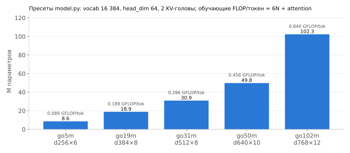
Выбор размера решил бенчмарк инференса на случайных весах, не априорная цифра. Контекст 2048 (медиана файла 1 023 BPE-токена, 74.5 % токенов — в файлах длиннее окна).
Почему 31 M и 50 M: бюджет латентности на ноутбуке
конфигурация (NnBench, случайные веса, 512 токенов + 20, 8 потоков, EPYC)
scalar Kotlin: строка
native q8: строка
при наборе (reuse 8)
S 30 M
148 мс
46 мс 39 / 16 мс
M 48 M
208 мс
67 мс 53 / 21 мс
L 99 M
534 мс
122 мс
100 / 37 мс
Бюджет: строка ≤ 150 мс, холодный файл ≤ 1 с. Скалярно укладывается только 30 M; с нативными ядрами — 50 M; 100 M требует сжатия контекста или следующего рефакторинга ядер.
Решение 2026-10-07: репозиторий несёт обе модели на язык (31 M по умолчанию, 50 M опционально), переключатель в плагине — позже.
Fill-in-the-middle: модель видит код после курсора
plain: <|file_sep|> path\n tokens <|endoftext|>
FIM PSM: <|fim_prefix|> <|file_sep|> path\n pre <|fim_suffix|> suf <|fim_middle|> mid <|endoftext|>
FIM SPM: <|fim_prefix|> <|fim_suffix|> suf <|fim_middle|> <|file_sep|> path\n pre mid <|endoftext|>
FIM на уровне документа с вероятностью 0.7; PSM/SPM 50/50; заголовок с путём всегда при префиксе (имя GitHub-репо намеренно не включено — плагин его не знает).
Границы: середина ≤ 256, суффикс ≤ 512, префикс — хвост, чтобы документ ≤ 2040 токенов.
Срезы: 50 % токенные (длина U[0,32] или U[0,256]); 50 % выровнены по строкам — середина кончается в конце строки, k строк (k=1 в половине случаев, иначе 1+Geom(0.35) ≤ 8), начало — начало строки или случайный токен внутри (курсор посреди строки).
Инференс: <|fim_prefix|><|fim_suffix|> suffix <|fim_middle|> header prefix, стоп на <|endoftext|> / переводе строки.
Баг, который стоил 62 % эпохи: упаковка резала FIM-документы
go31m-e1 на шаге 2500: PSM — 2 % верных строк при 62 % у SPM и plain.
Причина не формат, а нарезка: документы склеивались в плоский поток и резались на окна 2048 где попало; 74.5 % токенов — в файлах длиннее окна, поэтому в PSM середина обычно оказывалась без префикса — модель научилась его игнорировать.
Исправление (data.py): FIM-документ никогда не разрезается границей окна; если не помещается — укорачивается префикс (при ≥ 384 свободных токенов) или документ откладывается на следующее окно. Тесты: <|fim_prefix|> и <|fim_middle|> в одном окне, pre+mid+suf == body, точный resume.
PSM восстановился до 56 %, но SPM (70 %) остался форматом инференса; следующий прогон — чисто, с fim_rate 0.7.
PSM против SPM при 31 M: инференс только в SPM
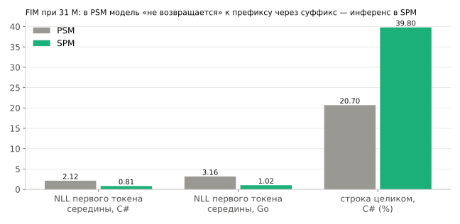
Даже при обучении с исправленным форматом с нуля (cs31m-e1) PSM не догнал: в 47 % случаев модель сразу выдаёт <|endoftext|>.
Упаковка данных: репозиторий как контекст
Понижающий вес больших репо : файл репозитория с T_r токенами остаётся в эпохе с вероятностью min(1, sqrt(2M / T_r)) — SDK-обёртка в 100× больше «колена» вносит 10×, а не 100×. SDK-репо падают с 0.9 % до 0.2 % потока.Группировка по репозиторию : файлы одного репо режутся на группы ≤ 2·seq_len, окно 2048 обычно содержит несколько файлов одного проекта — тот кросс-файловый контекст, который даст плагин.Без паддинга, без маски между документами, loss на каждом токене.
I/O: os.pread (page fault на 13.7 GB memmap стоил ~20 мс, pread 0.2 мс), id путей кэшируются один раз; загрузчик ~16 M токенов/с в один поток.
Детерминизм: состав эпохи и FIM-срезы из numpy.default_rng([seed, epoch, …]), состояние потока — в чекпойнте, resume точный (проверено: loss непрерывен на шаге 399 → 591).
Рецепт обучения
параметр
значение
оптимизатор
AdamW (0.9, 0.95), weight decay 0.1 только на матрицах, grad clip 1.0
lr
2e-3 , warmup 500, cosine до 1e-4 (e1: 1e-3)
батч
0.5 M токенов/шаг (e1: 1 M), micro-batch 32 × 2048
точность / компиляция
bf16 autocast, torch.compile
данные
1 эпоха = Go 6.85 G / C# 5.65 G токенов (~220 токенов/параметр — далеко за Chinchilla)
железо
2 × H200 NVL, DDP через torchrun: группы данных чередуются по рангу, rank 0 пишет чекпойнт с состоянием всех рангов
Экспорт: int8 per-output-column (embedding тоже), нормы f32, конфиг в meta-блоке; --check N измеряет потерю от квантизации.
Скорость: эпоха 31 M за 47 минут
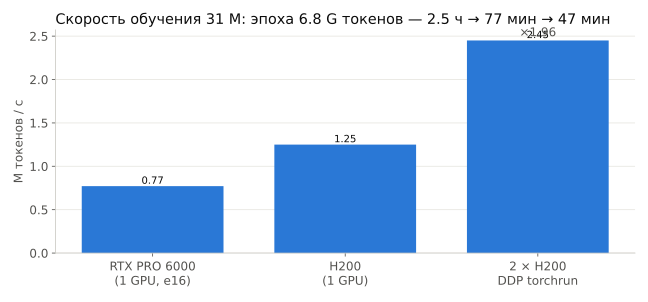
GPU без NVLink и P2P (VM): NCCL all_reduce через host memory ~28 GB/s — 62 MB bf16-градиентов go31m ≈ 2 мс/шаг, не мешает. Шаг 1 M токенов — 428 мс.
Кривые обучения
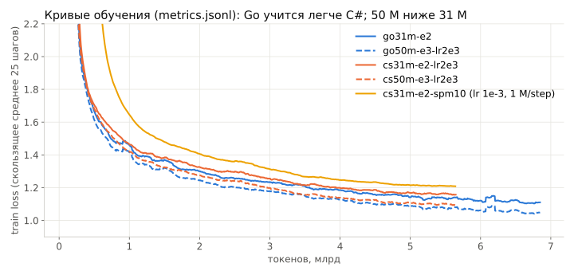
Eval perplexity по ходу обучения
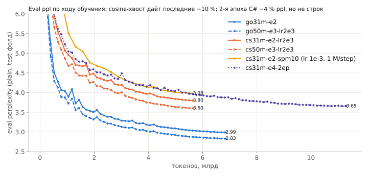
Абляции C#: что помогло и что нет
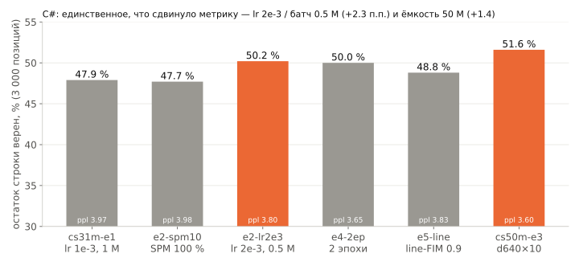
Что НЕ помогло — с числами
гипотеза
результат
вывод
SPM-доля 1.0 (не тратить ёмкость на PSM)
47.7 % против 47.9 %, FIM-ppl 4.39
ничего; PSM-способность теряется — оставляем 0.5
2 эпохи C# 31 M (11.3 G токенов, 83 мин)
ppl 3.80 → 3.65, но строки 50.2 → 50.0 %; fresh +1.9 п.п.
C# не ограничен данными при 31 M; не публикуем
Line-FIM (90 % середин — концы строк, 80 % одна строка)
48.8 % против 50.2 %
дефолтный микс уже покрывает случай
Project bigram cache на декоде (биграммы по другим файлам репо, λ 0.05–0.2)
Go 63.6 → 63.4 %, C# 50.2 → 50.3 %; гейт схлопывается (43.8 → 20.3 % показов)
недостающие факты — не биграммной формы
Beam 4
+0.9–1.6 п.п. за ×3.6 времени
только harness
Стандартная ошибка на 3 000 позициях ≈ 0.9 п.п.: разницы < 2 п.п. — шум без парного сравнения.
Прокси-модель 8.6 M: гипотезы о данных за минуты
Пресет go5m (d256 × 6, 8.6 M параметров, из них 4.2 M embedding), 1.5 G токенов, 20 минут на прогон.
Калибровка: та же пара «base vs line-FIM» на 8.6 M дала 40.2 % против 40.3 % — прокси верно предсказал «эффекта нет» для 31 M (50.2 vs 48.8).
Рабочее правило с 2026-10-07: гипотезы о данных/формате — на прокси, победители — сразу в 50 M; 31 M больше не переобучаем.
31 M → 50 M: ёмкость даёт немного, Go — больше, чем C#
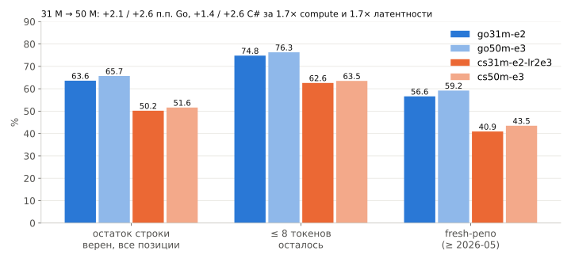
Harness eval_inline.py: тот же протокол, что у n-грамм
3 000 позиций в ~2 500 файлах test-фолда (каждый 50-й токен, seed 1), курсор после предыдущего токена строки; промпт ≤ 2000 токенов, ≤ 48 новых, greedy.
Сравнение лексическое : остаток строки (без комментария) побайтно (line exact), ≤ 8 — только строки с 1–8 оставшимися токенами (критерий n-грамм), первый лексический токен, norm — строки/числа как <STR>/<NUM>.
Уверенность = произведение вероятностей всех токенов строки вместе с переводом строки (conf_prod).
Разрезы: вид позиции (после ., (, ,, =, начало строки…), длина остатка, тест/не тест, внутри строкового литерала, тип «залеченного» остатка.
Дополнительные наборы: 400 позиций «набран пробел», 400 «курсор внутри идентификатора», 85 «внутри строки».
Паритет: Kotlin воспроизводит PyTorch 1000/1000 строк (см. §7) — числа harness'а переносятся на плагин.
N-граммы против трансформера того же размера файла, Go
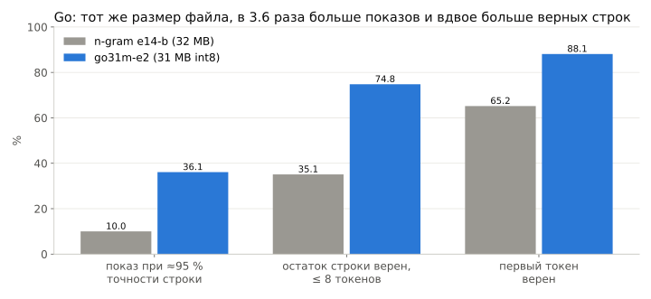
То же для C#: язык труднее для обеих моделей
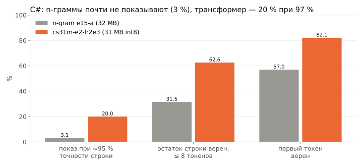
C#: строки длиннее (в среднем 8.1 лексических токена до конца против 6.5 в Go), больше свободного текста ($"…", сообщения логгера), многословные типы.
Порог показа: кривые «показано — точность»
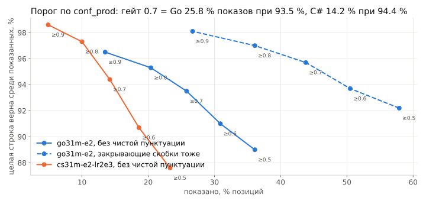
Какую уверенность брать: произведение, не среднее
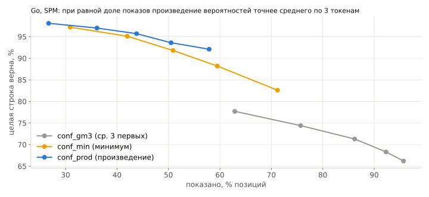
conf_gm3 (среднее первых 3 токенов, аналог n-грамм) переуверено для целых строк; conf_prod калибруется монотонно:
Token healing: курсор внутри BPE-претокена
Протокол (и живой курсор) часто стоит внутри претокена: foo(⟨⟩), "x"⟨⟩), после набранного пробела, посреди идентификатора — 9.7 % позиций Go / 10.9 % C#; (), "); — один претокен, модель такого обрыва в обучении не видела → 1.5–4.8 % верных строк там.
Решение: промпт режется назад до последней границы претокена; байты между границей и курсором («набранный остаток») — ограничение на декодирование : словарь маскируется до токенов, начинающихся с остатка (или являющихся его префиксом), вероятности из маскированного softmax, остаток отрезается от результата.
VocabPrefixIndex: отсортированный массив байтовых строк словаря + бинарный поиск, кэш по остатку — микросекунды.
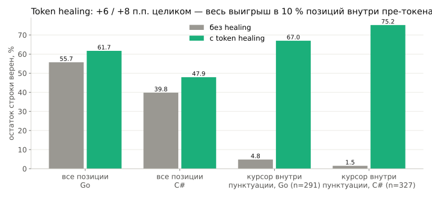
Правка после первого живого прогона в плагине: WORD_EOL
Плагин Go 0.2.199–0.2.202: return le⟨⟩ — курсор после слова сам является границей претокена, healing не срабатывал, модель продолжала «законченное» le скобкой ( (confProd 0.003–0.05).
healMode = WORD_EOL: если после курсора только закрывающие/пробелы (ситуация набора), лечим от начала слова → остаток le позволяет выбрать len (P = 0.996), один ответ для l, le, len.Ещё два изменения из того же прогона: trimClosersAfterCaret (редактор парит скобки — хвост подсказки, повторяющий ) после курсора, отрезается в движке) и гейт по умолчанию 0.7 вместо 0.8.
На 3 000 тестовых позиций правила BOUNDARY/WORD/WORD_EOL различаются < 0.1 п.п. — harness такую ситуацию почти не сэмплирует; поэтому живой прогон и нужен.
Fresh-набор: репозитории, созданные после выхода всех учителей
Стандартный test-фолд контаминирован для учителей: Qwen2.5-Coder-7B воспроизвёл buymeacoffee.com/<user>-URL из тестового репо.
tools/nn/eval/fresh_manifest.py <lang> 2026-05-01 1000: репозитории, созданные ≥ 2026-05-01, не в lm-фолде, ≥ 1 000 строк — C# 264 репо / 61 596 файлов, Go 481 / 129 918. 2 000 позиций.
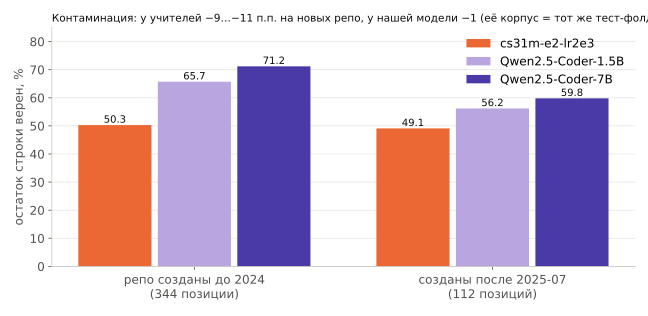
Потолок учителя: Qwen2.5-Coder на тех же позициях
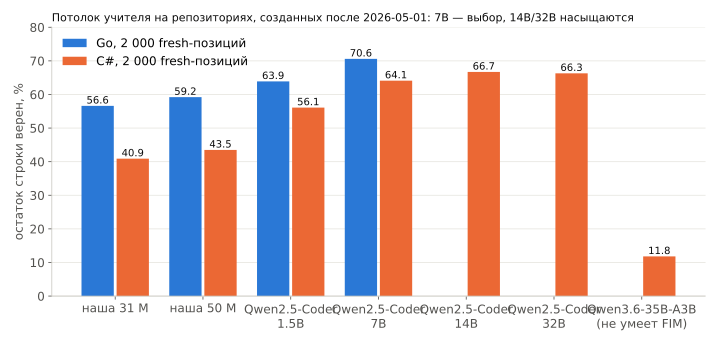
Учителя (eval_hf.py, HF-кэш 180 GB) ничего не поставляют в плагин — они измеряют запас для дистилляции. Qwen3.6-35B-A3B — не coder-base, FIM не делает (пустые середины).
Парный анализ: где именно выигрывает учитель
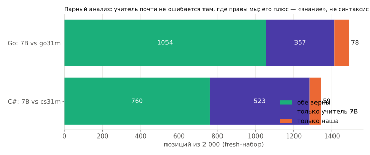
Разрыв растёт с длиной остатка: «знание», не синтаксис
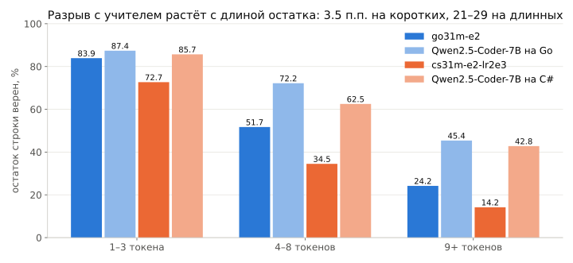
Ошибки учителя — те же, что и наши: имена, объявленные в других файлах, константы, литералы.
По видам позиций
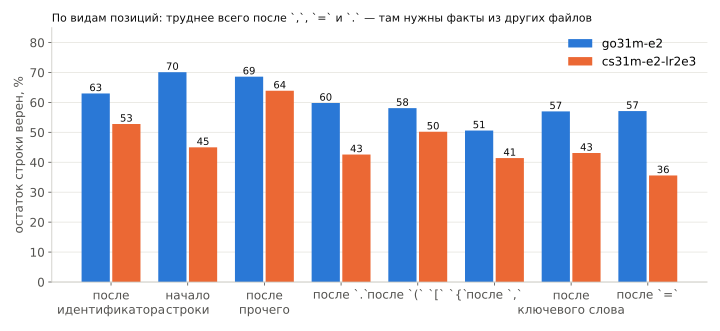
Сырые примеры, Go (go31m-e2, SPM) — верные
func mustWrite (t *testing.T, path, content string ) 1.00
s1 := NewSymbol("?cleartest" ⟨⟩ TRUE: ) GEN: ) prod 0.92 (healing: typed '"' → ')' )
for i, actCtx := range ctxs {
expCtx := c.Exp[i⟨⟩ TRUE: ] GEN: ] prod 0.82
_, err :=⟨⟩ TRUE: ic.getAerospikeVersion(node)
require.Error(t, err) GEN : ic.getAerospikeVersion(tt.req) prod 0.15 → не показано
Последний — класс «верная структура, чужое имя»: имя метода угадано из контекста файла, аргумент — нет; conf_prod 0.15 это и отражает.
Сырые примеры, Go — уверенные и неверные
go func (id int ) defer func () struct {}{} }()
⟨⟩ TRUE: key := fmt.Sprintf("key-%d" , id%10 )
_ = dc.PublishConfig(key, …) GEN : for j := 0 ; j < 50 ; j++ { prod 0.39
_, err := c.⟨⟩ TRUE: datasetStore.ByID(ctx, req.RelatedDatasetID)
if err != nil { GEN : repoComponent.CheckRelatedDataset(ctx, req.RelatedDatasetID) prod 0.03
func setNamespace (obj *unstructured⟨⟩ TRUE: .Unstructured, namespace string ) if namespace == "" { GEN : .Unstructured) { prod 0.51
Классы ошибок: факт из другого файла (имя поля/метода), пропущенный параметр, правдоподобная, но чужая идиома. Синтаксически всё валидно.
Сырые примеры, C# (cs31m-e2-lr2e3)
#region Simple compilation tests
⟨⟩ TRUE: [Fact] GEN: [Fact] prod 0.90
public void Round_trip_with_simple_catalogue ()
return this .PreviewImageService.PreviewCount -⟨⟩ TRUE: 1 ; GEN: 1 ; prod 0.61
public LayoutConstraints WithMaxWidth (int maxWidththis with ⟨⟩ TRUE: { MaxWidth = Math.Max(MinWidth, maxWidth) }; GEN: { MaxWidth = maxWidth }; prod 0.51
tooltipElement.AppendChild(prom.CreateTextNode(SentenceCase(⟨⟩
TRUE: elements.tooltip))); GEN: tmpElements.tooltip))); prod 0.94 — неверно, но уверенно
_ctx.RoundedRect⟨⟩ TRUE: (new Rect(bounds.Position - new Vector2(2.0f ), …), 3.0f );
GEN : (bounds.X - 4.0f , bounds.Y - 2.0f , bounds.Size.X + 8.0f , … stop: limit, prod 0.01
Таблицы литералов ({0, 2, 2, 7,15,15,…}) — зацикливание; защита от повторов снимает 2.5–2.8 % строк, все неверные.
Сколько добавил бы структурный контекст (PSI / Roslyn)
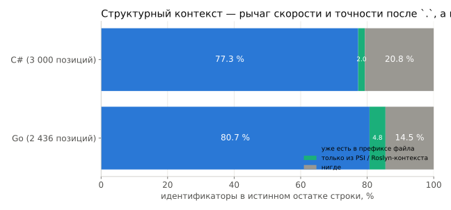
Go (GoMlContextExport, 2 436 позиций): после . PSI даёт 12.7 % идентификаторов; тип qualifier'а известен в 41 % .-позиций (+23 % пакеты; остальное — внешние модули без кэша).
C# (Roslyn-блок ≈ 250 BPE-токенов, ~150 мс/файл): «нужен и достаточен» лишь в 3 % позиций.
Из «нигде» в Go 58 % — члены qualifier'а, типизированного позже в строке; 12 % — имена, объявленные в этой же строке.
Roslyn-фильтр «разрешается ли сгенерированная строка?»
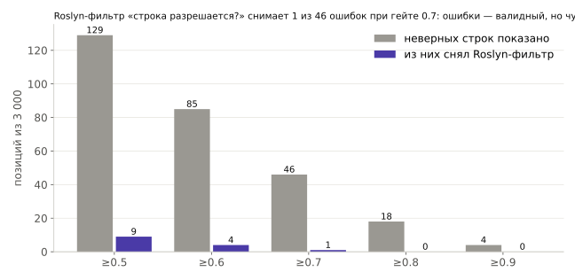
Покрытие семантической модели подняли с 86.1 до 94.2 % (NuGet-ссылки отсутствовали; ~80 пакетов, TypeIndex для потерянных csproj-usings).
При гейте 0.7 фильтр снимает 1 из 46 неверных строк и 18 верных (все там, где и истинная строка не разрешается). Остальные ошибки — валидный код, который автор просто не писал (return pairs; vs Assert.NotEmpty(pairs);).
Вывод: страховочная сетка, не рычаг качества; headroom ≈ +0.1–0.5 п.п. точности.
Формат .cml (CMLN v1): mmap, int8, без сжатия
поле
что
заголовок
CMLN, версия, meta key=value (vocabSize, dModel, nLayers, nHeads, nKvHeads, ffnDim, ropeTheta, normEps, tokenizerSha256, trainStep…)
директория
имя, dtype (f32 / int8+scales), ранг, dims, смещения — всё выровнено по 64 байтам
матрицы
[in, out] = weight.T, int8, одна f32-шкала на выходной столбец : `scale = max
tok_emb[dModel, vocab] — у каждого токена своя шкала; служит и lookup'ом, и выходной головой
Потери квантизации: Go ppl 2.131 → 2.131, C# 3.966 → 3.967, go31m-e2 2.988 → 2.989, cs31m-e2 3.798 → 3.801.
Загрузка: mmap 18–23 мс для 31 MB; на Windows mmap'нутый файл нельзя заменить — там читаем в direct buffer (~20 мс), write делает атомарный Files.move.
Рантайм отказывается работать при несовпадении sha256 словаря.
Скалярный Kotlin — production-путь
Веса остаются off-heap (mmap), активации — FloatArray.
Циклы под авто-векторизацию C2: axpy по смещению 0, независимые аккумуляторы, без проверок границ — ~18 GMAC/s на ядро .
NnExecutor: пул потоков, регион = матрица × блок столбцов; ~45 регионов и ~400 вызовов ядра на токен декода.KV-кэш в NnSession: prefill досчитывает только после наибольшего общего префикса с прошлым промптом.
Vector API удалён из ml-core 2026-10-07 — в JBR его нет; остались scalar и наши нативные ядра.
Нативные ядра: ~1 100 строк C11, 4 бинаря по ~100 KB
уровень ISA
инструкции
f32 GMAC/s/ядро
q8 GMAC/s/ядро
AVX2 + FMA
тайл 6×16
45–50 (≈ roofline)
61–66 (vpmaddubsw sign trick)
AVX-512 / VNNI
12×32 / 6×32, vpdpbusd
50–53
178–211 (90–100 % roofline)
NEON / DotProd
8×8 / 4×16, sdot
проверено на M1 Pro
проверено на M1 Pro
q8: активации int8 по блокам 128 входов с f32-шкалой, веса перепакованы в панели по 16 столбцов (один непрерывный поток по K — иначе GEMV головы прыгал по 128 KB и декод падал вдвое).
Кросс-компиляция zig cc: linux-x64 84 KB, windows-x64 101 KB, macos-arm64 103 KB, macos-x64 91 KB.
Загрузка из jar → System.load → cml_abi_version → self-test на CPU пользователя (каждое ядро против скалярного C-эталона) → любой сбой = Kotlin-ядра. -Dcompletionml.nn.native=false отключает.
Латентность на обученной модели, сервер
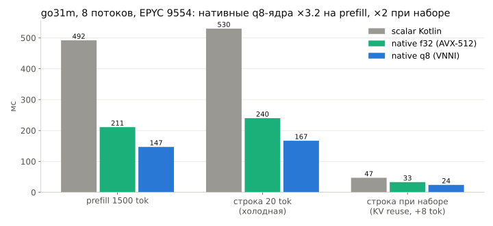
Декод: 1.98 → 1.50 → 1.06 мс/токен . Профиль q8-prefill: сами ядра ≈ треть, остальное — копии heap↔native и Kotlin-glue (следующий шаг: активации целиком в native).
Латентность на MacBook Pro M1 Pro (NEON проверен 2026-10-07)
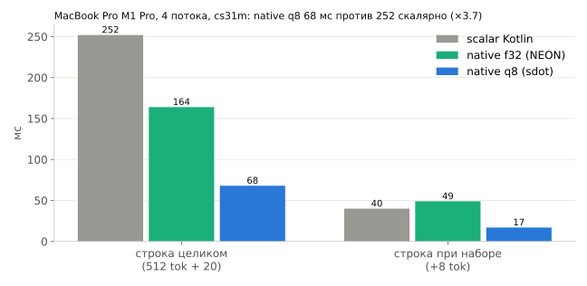
native: loaded libcmlkernels-macos-arm64.dylib, ISA neon-dotprod — без вопросов Gatekeeper, self-test пройден.Паритет на Mac: scalar и native f32 — argmax 32/32, продолжения 32/32, rmse логпроб 0.0000; q8 — та же строка на 39/40 позициях.
NEON f32 декодирует медленнее скаляра (2.28 vs 1.71 мс/токен) — не дефолт; NnKernels.best() сам выбирает q8.
Решение: нативные ядра поставляем .
Паритет Kotlin ↔ PyTorch на реальных весах
ядра
эталон
max |Δlogit|
argmax
greedy-48 идентичны
та же строка (1000 позиций)
scalar Kotlin
fp32 fake-quantised
0.0001 32/32
32/32
1000/1000
native f32
fp32 fake-quantised
0.0001 32/32
32/32
1000/1000
native q8
fp32 fake-quantised
0.36
32/32
26/32
957/1000
scalar
float-модель (до int8)
0.39
32/32
29/32
—
Сама int8-квантизация весов стоит 0.26 логита в среднем; q8-активации — примерно столько же; расхождения — близкие ничьи, line exact не меняется (54.7 % vs 54.6 %).
Фикстура: 32 промпта с логитами + 500 позиций × {plain, spm}; C#-фикстура models/parity-cs лежит в репо — проверка на любой машине за 3 мин.
Паритет healing'а: 99/99 записей (остаток, промпт, текст, confProd, show).
Бюджет промпта: сколько контекста реально нужно
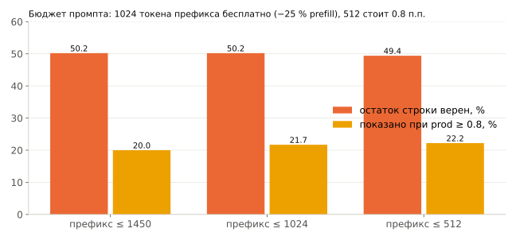
Дефолт NnCompletion.Options: maxPrefix = 1024 (было 1450), suffixTokens = 512 (256 стоило бы −0.6 п.п., 128 −1.7), maxNew = 48, префикс из последних 40 KB текста до начала строки.
Политика показа (NnCompletion.complete(path, before, after, session))
show = confProd ≥ 0.7 ∧ ¬(suppressPunctOnly ∧ punctOnly) ∧ ¬repeated ∧ text.isNotEmpty()
гейт confProd
Go go31m-e2: показано / верно
C# cs31m-e2-lr2e3
≥ 0.6
30.9 % / 91.0 %
18.5 % / 90.8 %
≥ 0.7 25.8 % / 93.5 % 14.2 % / 94.4 %
≥ 0.8
20.4 % / 95.3 %
10.0 % / 97.3 %
≥ 0.9
13.5 % / 96.5 %
4.9 % / 98.6 %
punctOnly ();, }, )]) — 24.5 % позиций Go, верны в 98.9 % при ≥ 0.8: показывать их — вопрос UX (IDE всё равно вставит); с ними Go при 0.7 = 43.8 % / 95.8 %.Защита от повторов: BPE n-грамма (n ≤ 4, ≥ 4 байт) трижды подряд → стоп и не показывать; бесплатна (снимает только неверные).
Исключение p(newline) из произведения кривую не улучшает (−0.5–1 п.п. точности при равном показе).
Память и прогрев
RSS JVM бенчмарка 314–385 MB при -Xmx2g (базовая JVM 60–66 MB; heap 173–249 MB — KV-кэш + буферы активаций); mmap-веса — 31 MB page cache, q8-перепаковка — ещё ~31 MB native (39–45 мс один раз).
KV-кэш одной сессии при GQA 2 головы: f32 на 2048 токенов 16.8 MB (вместо 67 MB при 8 головах).
JIT: первая строка — 1.4 с скалярно / 0.37–0.57 с native → фоновый прогрев prefill'ом при старте плагина; со второй строки — steady state.
NnSession — AutoCloseable (native KV-кэш), Cleaner подстрахует.
8. Инструменты и дисциплина
Репозиторий idea-ml-completion
ml-core/ чистый Kotlin (stdlib, JDK 21, без preview-API) — встраивается в плагины как git subtree под ml/
lex/ ngram/ rank/ bpe/ nn/ (nn/native: JNI-загрузчик со scalar-fallback) format/
native/ C11 SIMD-ядра, self-test, bench; `make cross` — 4 платформы через zig
ml-train/ Kotlin CLI: prepare, shard, l2 (LM), l1 (ранкер), eval-lm, eval-rank, eval-inline, bench-nn
tools/nn/ PyTorch: tokenizer/ train/ eval/ clean/ distill/ — только обучение
tools/psi/ headless-экспорт реальных Go-списков; tools/roslyn/ — Roslyn-фильтр и контекст для C#
tools/corpus/ каталог GitHub и параллельная загрузка; tools/server/ — рецепты сервера
models/ опубликованные модели (31/50 M на язык, n-граммы, BPE, паритетные фикстуры)
docs/ NEURAL-RU, NN-FORMAT, NATIVE-KERNELS, NN-PARITY, NN-COMPLETION-API, ADAPTER, MAC-CHECK-RU, …
Плагины: include(":ml-core") из ml/ml-core; модели — обычные файлы в ресурсах (<lang>-lm.cml, <lang>-rank.cml, <lang>-nn.cml + .bpe);ml-core синхронизируется в оба плагина.
Дисциплина экспериментов
Один эксперимент = один коммит : запись eNN в CHANGELOG с таблицей измерений + строка в таблице README.Стандартное измерение зафиксировано: сплит по репозиториям, dedup 0.8, cache λ=0.3, cross-fitted фолды lm/rank/test, 300 held-out репо, 3 000 позиций harness'а.
Модели — в репозитории (models/, 30–50 MB каждая), корпуса и чекпойнты — нет; GitHub — единственное долговременное хранилище.
Что не измерялось — сказано явно (ARCHITECTURE-REVIEW-RU «Не измерено»: абляции глубины/ширины, GQA/MQA, разброс по сидам, латентность на x86-ноутбуке с обученной моделью).
Параллельные агенты — в git worktree; долгие задачи — systemd-run, сессия — в tmux.
Сервер и цена одного прогона
машина
VM 32 vCPU, 235 GB RAM, 2 × H200 NVL 143 GB (без NVLink/P2P), диск 2 TB под корпус
prepare Go / C#19 / 29 мин (stats.json: 1 139 / 1 721 с)
n-граммная LM на полном корпусе
11–12 мин, ~85–100 GB heap
BPE-словарь
~5 мин на стратифицированной выборке 1.6 GB
трансформер 31 M, 1 эпоха, DDP
Go 49 мин, C# ~47–77 мин; 50 M — 62–89 мин
eval 3 000 позиций
~5–20 мин на GPU
ранкер на 120 k списков
55 с
Переустановка сервера 2026-10-07: всё на / потеряно, восстановлено за день
Потеряно: манифесты, токенайзеры, шарды, модели e14/e15/e17, чекпойнты, Go-корпус (190 GB), IDEA, клоны плагинов. Выжил только диск /mnt/corpus с C#.
Что спасло: tools/corpus/fetch-catalog.sh (Go-каталог за ~25 мин при 170 MB/s), tools/server/rebuild-data.sh (prepare → shard → BPE → encode для обоих языков), код обучения в tools/nn/, модели в models/ на GitHub.
Пересобрано в тот же день: n-граммы (Go ppl 4.6, C# 5.3 на новых фолдах), Go BPE-словарь (новый sha256 — старая go-nn-31m-e1 с ним несовместима), go31m-e2 (49 мин), затем cs/go 50 M.
Go-ранкер e17 пришлось переэкспортировать (e17b, уже с зависимостями: MRR 0.799) — модели в репо, чекпойнты нет.
Урок: всё, что имеет значение, пушится по мере готовности.
Дорожная карта (в порядке приоритета)
Дистилляция из Qwen2.5-Coder-7B (sequence-level): tools/nn/distill/distill.py сэмплирует FIM-позиции из шардов, учитель генерирует через vLLM, train.py --teacher/--teacher-rate подмешивает строки учителя как середины FIM. Запас: Go +14 п.п., C# +23 п.п. на fresh-наборах. Инструменты готовы, генерация идёт.Структурный контекст в промпте (сигнатуры, члены типов из других файлов) — не ради recall (+2–5 %), а ради точности после . и скорости (контекст в 3–5 раз короче).Constrained decoding по PSI-кандидатам после .: маска первого токена уже есть (VocabPrefixIndex) — достаточно подать список допустимых идентификаторов.GBDT-ранкер + log-prob нейромодели как признак; weigher C#-ранкера e18 в плагине .NET.Переключатель 31 M / 50 M в плагине; fine-tuning на коде организации (корпус + рецепт воспроизводимы из манифеста).
Инференс: активации целиком в native (убрать копии и диспетчеризацию), int4 для декода на ноутбуках.
Итоговые числа
Go
C#
корпус после фильтров
4.69 млн файлов, 5.81 G токенов, 22 620 lm-репо
6.06 млн, 4.22 G, 25 234
n-грамма (32 MB) ppl / top-1
4.6 / 0.510
5.3 / 0.487
ранкер на реальных списках: MRR / top-1 (правила)
0.808 / 0.710 (0.527 / 0.388); e17b 0.7990.711 / 0.588 (0.526 / 0.367)
трансформер 31 M (int8 31 MB): ppl
2.99
3.80
остаток строки верен, все позиции / ≤ 8 токенов
63.6 % / 74.8 % 50.2 % / 62.6 %
гейт 0.7: показано / верно
25.8 % / 93.5 %
14.2 % / 94.4 %
50 M: остаток строки
65.7 %
51.6 %
fresh-репо: наша 31 M / Qwen2.5-Coder-7B
56.6 / 70.6 %
40.9 / 64.1 %
строка 20 токенов, 8 потоков: scalar / native q8
530 / 167 мс (при наборе 47 / 24)
M1 Pro, 4 потока: 252 / 68 мс
паритет Kotlin ↔ PyTorch
1000/1000 строк
40/40 (фикстура в репо)
Ссылки
Движок: github.com/dvislobokov/idea-ml-completion — CHANGELOG.md (e01–e18 с измерениями), docs/NEURAL-RU.md, models/
Плагин Go: idea-golang-support (ветка migration: ранкер за -PmlEnabled=true, inline-провайдер поверх NnCompletion)
Плагин C#: idea-dotnet-support (экспорт списков mlDataset, inline-задача ML_INLINE_TASK.md)
Проверить инференс на своей машине за 5 минут: docs/MAC-CHECK-RU.md (JDK 21, модель и фикстура в репо, сеть не нужна)
Спасибо. Вопросы?
Источники: README.md, CLAUDE.md, CHANGELOG.md e01–e18, docs/NEURAL-RU.md, docs/NN-COMPLETION-API.md, docs/NATIVE-KERNELS.md,
docs/NN-FORMAT.md, docs/NN-PARITY.md, docs/MAC-CHECK-RU.md, tools/psi/REPORT.md, tools/roslyn/REPORT.md, models/README.md,
~/work/ml-data/{go,csharp}/nn/eval-*.md и metrics.jsonl прогонов.
Источники: docs/NEURAL-RU.md §1; CHANGELOG e17 (top-1 0.388 правила / 0.710 ранкер); пример — eval-go31m-e2-dump.md.
Источники: CLAUDE.md «Hard constraints»; docs/NEURAL-RU.md §2; README «Constraints».
Источник: docs/NEURAL-RU.md §2, §5 (бюджет латентности).
Источники: catalog/*.jsonl (подсчёт строк), CLAUDE.md «Data», ~/work/ml-data/{go,csharp}/prepared/stats.json (prepare 2026-10-07), README «Data pipeline».
Источник: подсчёт поля `license` в ~/work/ml-data/catalog/go-20.jsonl (38 085 строк) и csharp-20.jsonl (42 579); «none» = null в API, NOASSERTION = нестандартная.
Источник: stats.json обоих языков; CHANGELOG e05 (dedup), e14 (маркер в комментарии), e15 (C#-фильтры v2).
Источник: CHANGELOG e16 «Corpus»; models/README.md (почему go-nn-31m-e1 не опубликована).
Источники: CHANGELOG e14 (шарды), e16 «Tokenizer»; docs/NEURAL-RU.md §3.3, §4.
Источник: docs/NEURAL-RU.md §4; CHANGELOG e16.
Источник: CHANGELOG e03, e14.
Источник: CHANGELOG e02 (формат v2), e03, e11, e14 (размеры).
Источник: CHANGELOG e05, e07.
Источник: CHANGELOG baseline, e04, e05, e06 (MKN-5), e11/e12, e14/e15, e18 («CPU models rebuilt»). Тестовые наборы меняются с масштабом корпуса (13 → 30 → 300 репо), сравнение индикативное.
Источник: CHANGELOG e06, e12.
Источник: CHANGELOG e13, e14 (inline), e15 (качественный разбор).
Источник: ml-core/.../rank/FeatureSchema.kt, LinearRanker.kt; docs/ADAPTER.md §4; CHANGELOG e10, e17.
Источник: FeatureSchema.kt (BASE), docs/ADAPTER.md §2–4, CHANGELOG e07, e10.
Источник: CHANGELOG e14/e15 (proxy MRR), e17 (таблица на 83 904 списках).
Источник: CHANGELOG e17; tools/psi/GO-HEADLESS-EXPORT.md.
Источник: tools/psi/REPORT.md (таблицы по gatewayd и трём репозиториям).
Источник: CHANGELOG e17, «Per context kind».
Источник: CHANGELOG e17 («Heaviest standardised weights», время обучения).
Источник: CHANGELOG e18 «C# ranker on real plugin lists» (таблица на 4 670 тест-списках, per context, веса) и «Go ranker re-exported and retrained (e17b)»; models/README.md.
Источник: tools/nn/train/model.py (докстринг и код), docs/NN-FORMAT.md «Model semantics», docs/ARCHITECTURE-REVIEW-RU.md.
Источник: `python tools/nn/train/model.py` (таблица пресетов, GFLOP/tok = 6N + 12·L·d·T), docs/NEURAL-RU.md §5–6.
Источник: docs/NATIVE-KERNELS.md «End to end» (строки S/M/L при 8 потоках), docs/NEURAL-RU.md §5, CLAUDE.md «Decisions 2026-10-07».
Источник: tools/nn/train/data.py (докстринг), tools/nn/train/README.md «FIM».
Источник: CHANGELOG e16 «FIM bug found and fixed mid-run»; docs/NEURAL-RU.md §6.
Источник: docs/NEURAL-RU.md §7b (NLL PSM/SPM C# 2.12/0.81, Go 3.16/1.02; строка целиком 20.7 vs 39.8 %).
Источник: tools/nn/train/README.md «Data pipeline decisions», data.py докстринг, CHANGELOG e16/e18 (smoke resume).
Источник: tools/nn/train/README.md, CHANGELOG e16 («Model»), e18 (lr2e3 recipe, DDP).
Источник: CHANGELOG e16 (771k tok/s PRO 6000), e18 (1.25 M на H200, 2.45 M DDP, ×1.96, 428 ms/step); CLAUDE.md (NCCL).
Источник: ~/work/ml-data/go/nn/{go31m-e2,go50m-e3-lr2e3}/metrics.jsonl, ~/work/ml-data/csharp/nn/{cs31m-e2-lr2e3,cs50m-e3-lr2e3,cs31m-e2-spm10}/metrics.jsonl; поле loss, скользящее среднее 25 шагов.
Источник: те же metrics.jsonl, поле eval_ppl (plain ppl на фиксированных окнах test-фолда); cs31m-e4-2ep — 2 эпохи, 11.3 G токенов.
Источник: CHANGELOG e16 (cs31m-e1 47.9 % healed), e18 (spm10 47.7, lr2e3 50.2, 2ep 50.0, line 48.8, cs50m 51.6; ppl 3.97/3.98/3.80/3.65/3.83/3.60).
Источник: CHANGELOG e18 (все пять пунктов); docs/ARCHITECTURE-REVIEW-RU.md (стандартная ошибка).
Источник: CHANGELOG e18 «Proxy calibration»; CLAUDE.md.
Источник: CHANGELOG e18 (go50m / cs50m абзацы), models/README.md.
Источник: CHANGELOG e16 «Whole-line evaluation»; ~/work/ml-data/go/nn/eval-go31m-e2.md (шапка и Caveats).
Источник: README «Results»; CHANGELOG e14 (n-gram 10.0 % / 35.1 % / 0.652), e18 (go31m-e2: prod ≥0.8 36.1 % при 97.0 %, ≤8 74.8 %, первый токен 0.881).
Источник: CHANGELOG e15 (3.1 % / 31.5 % / 0.570), e18 (cs31m-e2-lr2e3: prod ≥0.8 20.0 % при 97.0 %, ≤8 62.6 %, первый токен 0.821); NEURAL-RU §7b (длина остатка).
Источник: eval-go31m-e2.md и eval-cs31m-e2-lr2e3.md, раздел «spm: show policy», колонка both (без чистой пунктуации + защита от повторов) и none.
Источник: eval-go31m-e2.md «spm: thresholds for the three confidence definitions»; NEURAL-RU §7b (калибровка C#).
Источник: docs/NEURAL-RU.md §7c; docs/NN-COMPLETION-API.md.
Источник: CHANGELOG e18 «First live run of go-nn-31m-e2»; docs/NN-COMPLETION-API.md (healMode, trimClosersAfterCaret, таблица гейта).
Источник: CHANGELOG e18 «Teacher ceiling» (контаминация, разбивка по дате создания на 500 стандартных позициях) и «Fresh-repository evaluation set».
Источник: CHANGELOG e18 (таблица fresh C#: 40.9/43.5/56.1/64.1/66.7/66.3/11.8; fresh Go: 56.6/59.2/63.9/70.6).
Источник: CHANGELOG e18: C# fresh «both 760, 7B only 523, ours only 59»; Go fresh «only teacher / only ours 357 / 78», both = 2000·0.566 − 78 = 1054 (выведено из line exact 56.6 %).
Источник: CHANGELOG e18 (fresh C#: rest 1–3 / 4–8 / 9+ = 72.7/34.5/14.2 ours vs 85.7/62.5/42.8 7B; fresh Go: 83.9/51.7/24.2 vs 87.4/72.2/45.4).
Источник: eval-go31m-e2.md и eval-cs31m-e2-lr2e3.md, «spm: breakdowns», группа kind, колонка line exact.
Источник: ~/work/ml-data/go/nn/eval-go31m-e2-dump.md, раздел «confident & right».
Источник: eval-go31m-e2-dump.md, раздел «confident & wrong».
Источник: ~/work/ml-data/csharp/nn/eval-cs31m-e2-lr2e3-dump.md (confident & right / wrong); NEURAL-RU §7c (защита от повторов).
Источник: CHANGELOG e17 (side result), tools/roslyn/REPORT.md §3.
Источник: tools/roslyn/REPORT.md §1–2.
Источник: docs/NN-FORMAT.md; CHANGELOG e16 (export lossless), e18 (int8 check, Windows fix); docs/NN-PARITY.md (mmap timing).
Источник: CHANGELOG e16 «Inference»; docs/NATIVE-KERNELS.md «Threading»; NN-COMPLETION-API.md (NnSession).
Источник: docs/NATIVE-KERNELS.md (ISA levels, throughput, build, loading); docs/MAC-CHECK-RU.md.
Источник: docs/NN-PARITY.md «Latency on the real weights» (go31m-e1, 8 потоков, медианы из 7); NATIVE-KERNELS.md (профиль).
Источник: docs/MAC-CHECK-RU.md «Результаты», docs/NATIVE-KERNELS.md «macOS»; CLAUDE.md «Decisions 2026-10-07».
Источник: docs/NN-PARITY.md (таблицы logit/behavioural parity, C# fixture); NEURAL-RU §7c «Паритет».
Источник: CHANGELOG e18 (prefix 1024/512 на cs31m-e2-lr2e3), docs/NN-COMPLETION-API.md (Options defaults, suffix study).
Источник: docs/NN-COMPLETION-API.md (формула show, таблица гейта, punct-only); NEURAL-RU §7c.
Источник: docs/NN-PARITY.md «Memory and load»; model.py (комментарий о KV-кэше), ARCHITECTURE-REVIEW-RU (16.8 vs 67 MB); NATIVE-KERNELS.md.
Источник: README «Layout», docs/ADAPTER.md §1.
Источник: CLAUDE.md «Communication and conventions», README «Experiment log», docs/ARCHITECTURE-REVIEW-RU.md.
Источник: CLAUDE.md «This server»; stats.json (seconds); CHANGELOG e14/e15 (LM), e16 (BPE), e18 (эпохи, DDP), e17 (ранкер).
Источник: CLAUDE.md (разделы «REINSTALLED», «State 2026-10-07 afternoon»), CHANGELOG e18, models/README.md (go-rank-proxy).
Источник: CLAUDE.md «Next in the queue», «Plan»; commit c575d18 (distill tooling); CHANGELOG e18 (headroom, bigram cache → structure instead); NATIVE-KERNELS.md «Known gaps».
Источник: stats.json; CHANGELOG e17, e18; NN-COMPLETION-API.md; NN-PARITY.md; MAC-CHECK-RU.md; CLAUDE.md (C# preliminary).
Источник: README, docs/ADAPTER.md, docs/MAC-CHECK-RU.md, CLAUDE.md (состояние плагинов).